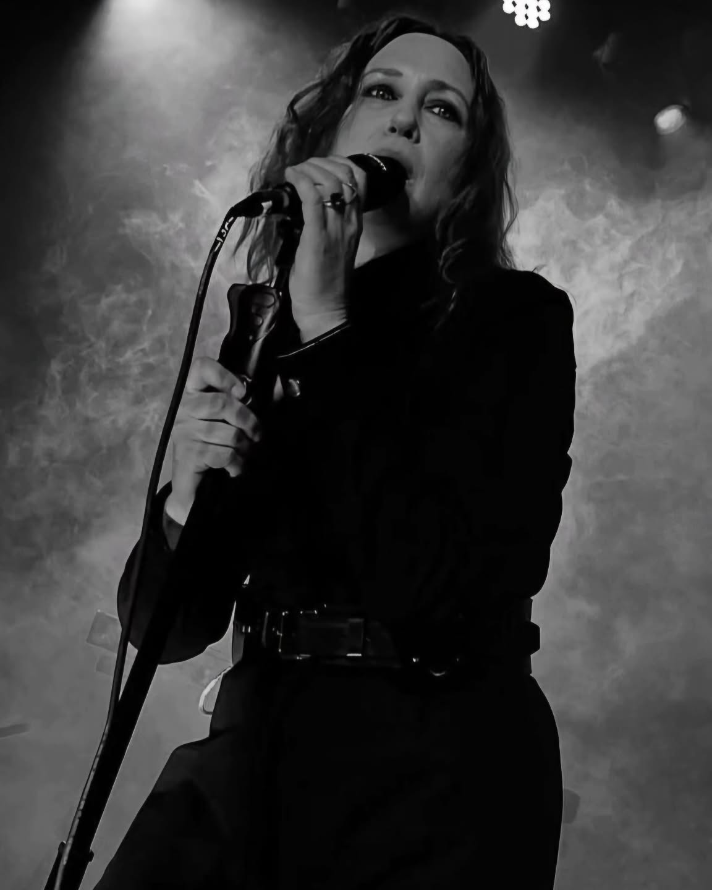

BLOGS

Vera Farmiga
Vera Farmiga, known for her performances in horror films such as "The Conjuring", is also the lead singer of the gothic rock band The Yagas. The band, formed in 2023, released their debut album, "Midnight Minuet", on April 25th. The album, with ten tracks, includes the singles "The Crying Room" and "She's Walking Down" and is produced by Renn Hawkey, Farmiga's husband, and mixed by Brian Virtue.
 4 Min
4 Min 8 Feb,24
Renn Hawkey
Renn McDonnell Hawkey is an American musician and producer, known for being the keyboardist of the band Deadsy. He is currently part of the band The Yagas, for which he produced the debut album Midnight Minuet. The album's title track was originally composed by Hawkey for Deadsy.
16 Jan,24

Jason Bowman
Jason Bowman é o dono da Woodstock Rock Academy, em Woodstock, Nova York, ao lado de sua esposa, Acacia Ludwig. A escola de música, voltada inicialmente para crianças, também oferece um programa adulto, onde os membros da The Yagas se conheceram em 2023.Como baterista, Bowman fornece os ritmos intensos que sustentam o som da banda, descrito como uma fusão de metal, rock alternativo e industrial. Ele foi fundamental na formação da banda, sugerindo a Hawkey que escrevessem uma música juntos, o que levou à criação de "I Am", a primeira faixa composta pelo grupo. Sua participação no programa adulto da Rock Academy facilitou a conexão entre os membros, e sua habilidade na bateria é destacada em faixas como "The Crying Room" e "Life of a Widow".
15 Apr,23
Mark Visconti
Mark Visconti é um guitarrista que também conheceu os outros membros da The Yagas na Woodstock Rock Academy, onde seu filho, Ben, era aluno. Não há muitas informações disponíveis sobre sua trajetória musical anterior, mas ele é descrito como parte essencial do som da banda. Visconti traz riffs de guitarra serpenteantes e texturizados, que complementam os sintetizadores de Hawkey e a voz de Farmiga. Sua contribuição é evidente em faixas como "The Crying Room", onde os riffs criam um ambiente sombrio, e em "She’s Walking Down", que apresenta uma abordagem mais agressiva. Ele colaborou na composição inicial ao lado de Hawkey e Farmiga, ajudando a moldar o som eclético da banda, que varia de metal a rock alternativo com influências góticas.
22 Sep,22

Mike Davis
Assim como Visconti, Mike Davis também se conectou à banda por meio da Woodstock Rock Academy, onde os membros se encontraram no programa adulto. Não há detalhes extensos sobre seu passado musical, mas ele é parte integrante do quinteto.Davis fornece as linhas de baixo que ancoram o som da banda, descrito como "tempestuoso" em faixas como "The Crying Room". Sua participação complementa a seção rítmica ao lado de Bowman, criando uma base sólida para as camadas de sintetizadores e guitarras. Ele é mencionado como parte do processo criativo colaborativo que resultou em Midnight Minuet, onde todos os membros contribuíram com suas experiências pessoais para o som da banda.
11 Mar,23